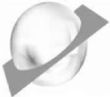
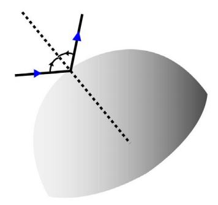
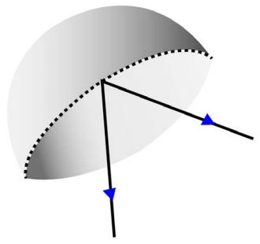
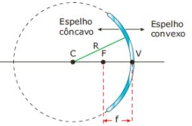
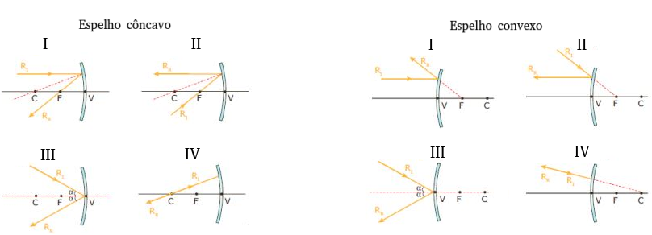
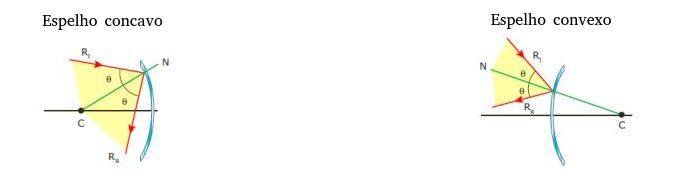
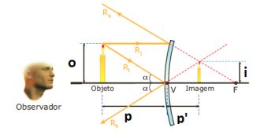
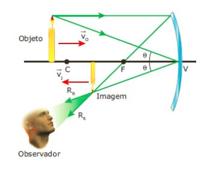
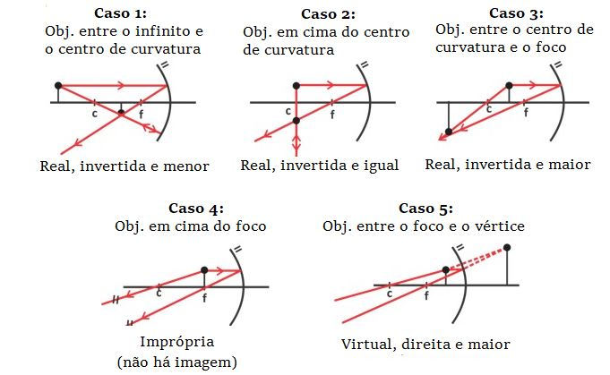

|
Ao cortarmos transversalmente uma esfera oca, obtemos uma calota. Uma calota bem polida, capaz de refletir especularmente, é um espelho esférico. Tanto a parte interna quanto a parte externa da esfera podem ser polidas e nos servir de espelho. Se usarmos a parte interna como espelho, a chamaremos de espelho côncavo; se for a parte externa, a chamaremos de espelho convexo. |
 |
Espelhos convexosConforme vimos, quando usamos a parte externa da calota como espelho, temos o chamado espelho convexo. O espelho convexo privilegia o tamanho do campo de visão, ampliando-o, em detrimento do tamanho da imagem, que reduz. Essa propriedade — a ampliação do campo de visão — torna esse tipo de espelho útil em algumas ocasiões, como, por exemplo: garagens, ônibus, comércios etc. |
Espelhos côncavosComo acabamos de aprender, quando usamos a parte interna da calota como espelho, temos o chamado espelho côncavo. O espelho côncavo privilegia, em alguns casos, o tamanho da imagem, ampliando-a, em detrimento do campo de visão, que reduz. Essa propriedade — a ampliação da imagem — torna esse tipo de espelho útil em algumas ocasiões, como, por exemplo: telescópios, odontologia, maquiagem etc. |
|
|
 |
 |
São pontos de notória importância para a análise geométrica do comportamento dos raios luminosos que incidem sobre o espelho.
 |
C: centro de curvatura do espelho (centro da esfera que originou a calota); V: vértice do espelho (ponto central da calota); F: foco do espelho (ponto médio do segmento CV); f: distância focal (FV); Eixo principal: eixo sobre o qual estão os demais pontos notáveis. |
I. Todo raio que incide paralelo ao eixo principal é refletido na direção do foco;
II. Todo raio que incide passando pelo foco é refletido em direção paralela ao eixo principal;
III. Todo raio que incide sobre o vértice é refletido com o mesmo ângulo de incidência;
IV. Todo raio que incide passando pelo centro de curvatura é refletido sem sofrer desvio.
Os raios que incidem da maneira/pelos pontos destacados acima (paralelamente ao eixo, pelo foco etc.) são chamados de raios notáveis; veja as representações deles abaixo:

Todos os demais raios são denominados raios não notáveis. É importante ressaltar que tanto os raios notáveis quanto os demais raios sempre obedecem às, já estudadas, leis da reflexão:

⚛ QUANTO AO ENCONTRO DOS RAIOS:
◦ Real: se a imagem é formada a partir da prolongação dos raios refletidos;
◦ Virtual: sempre que a imagem é formada a partir do encontro direto dos raios refletidos;
◦ Imprópria: sempre que os raios não se encontram. Nesse caso, não há formação de imagem.
⚛ QUANTO AO SENTIDO:
◦ Direita: a imagem projeta-se com o seu sentido vertical original;
◦ Invertida: a imagem projeta-se verticalmente invertida.
⚛ QUANTO AO TAMANHO DA IMAGEM:
◦ Maior: a imagem originada é maior do que o objeto;
◦ Menor: a imagem originada é menor do que o objeto;
◦ Igual: a imagem possui o mesmo tamanho do objeto.
Para representarmos a imagem, basta escolhermos dois raios que partem do objeto rumo ao espelho, nele refletem e, em seguida, se encontram. A conexão desses raios nos informa o necessário para categorizarmos com clareza a imagem formada.
Observe o exemplo a seguir:

Como é possível inferir a partir da análise dos dois raios incidentes e refletidos, a imagem encontrada é:
1. Virtual (pois é formada a partir da prolongação dos raios luminosos);
2. Direita (pois o sentido vertical da imagem foi preservado [ela não está invertida]);
3. Menor (pois a imagem formada é menor que o objeto refletido).
Obs.: todas as imagens refletidas em um espelho convexo possuirão sempre essas mesmas características (virtual, direita e menor).
Para representarmos a imagem, selecionamos dois raios e identificamos o ponto de encontro, tal como fizemos com os espelhos convexos.
Observe o exemplo a seguir:

Como é possível inferir a partir da análise dos dois raios incidentes e refletidos, a imagem encontrada é:
1. Real (pois é formada a partir do encontro direto dos raios luminosos);
2. Invertida (pois o sentido da imagem é oposto ao sentido do objeto);
3. Menor (pois a imagem formada é menor que o objeto).
Obs.: diferentemente das imagens formadas pela reflexão em um espelho convexo, no espelho côncavo a imagem gerada pode assumir todas as classificações possíveis. A classificação da imagem obtida nesse espelho depende exclusivamente da posição que o objeto ocupa diante do espelho.
Os diferentes casos são listados abaixo:
